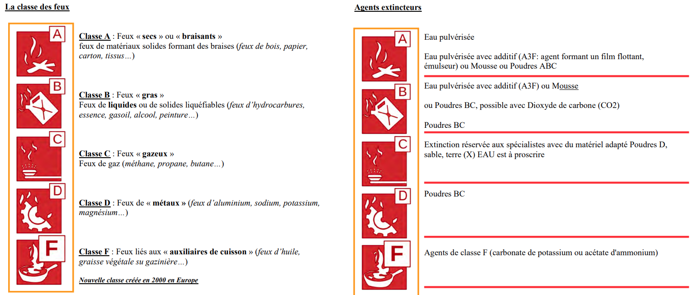
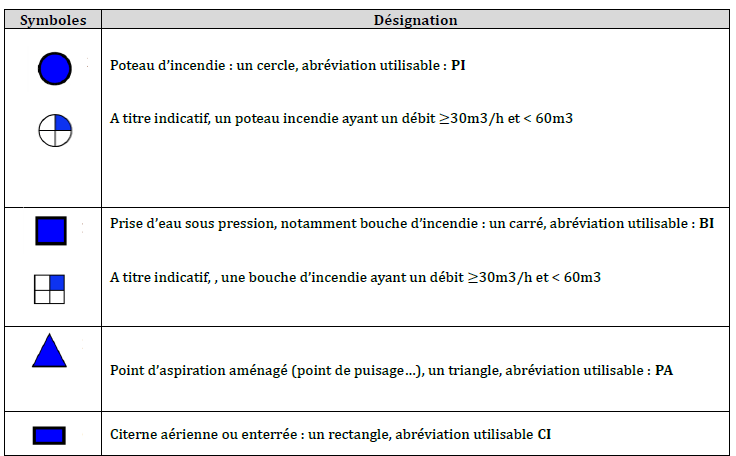
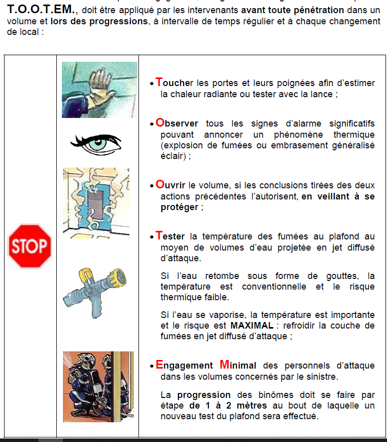
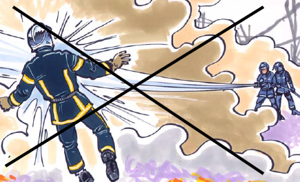
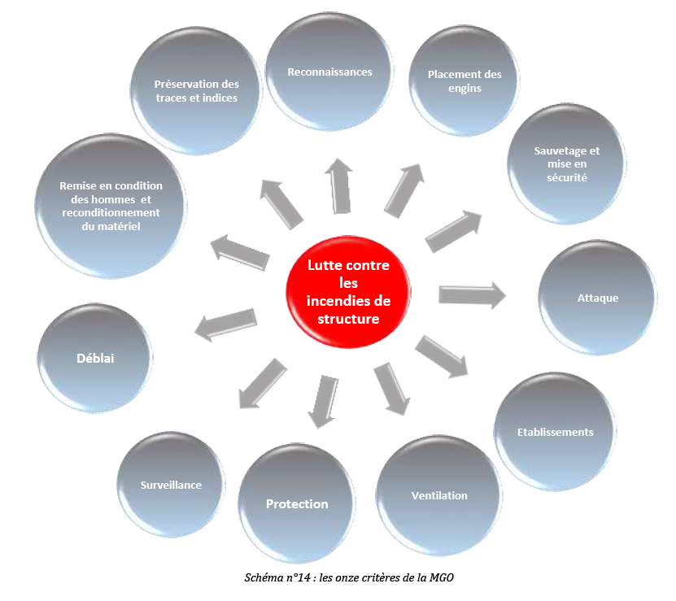

Système feu


Extinction


Procédés d’extinction
- Refroidissement : c’est l’action d’abaisser la température d’inflammation des matériaux, bloquant la distillation des gaz et vapeurs inflammables
- Étouffement : c’est le fait d’empêcher l’apport d’air vers le produit en feu, d’arrêter l’émission des vapeurs inflammables et isoler les flammes du combustible
- Soufflage : en coupant la flamme des vapeurs inflammables émises par le matériau en feu, et supprimer l 'énergie d'activation
- Dispersion : en étendant les matériaux qui brûlent pour favoriser l’action de l’agent extincteur
- Inhibition : en bloquant ou en ralentissant le processus chimique de réaction (gaz inerte)
- Coupure : en coupant l’alimentation en fluide (gaz, hydrocarbure)
- Part du Feu : pour les feux de forêt, créer une barrière (retardant, rideau d’eau, débroussaillage)
Les techniques d’extinction
- Refroidissement des fumées (Gas cooling) : impulsion courte ou longue puis refermer la porte. Sauf quand plafond bas fumé, interface air fumé turbulent → jet droit sweep plafond 300L/min.
- Extinction directe : refroidissement des surfaces → zigzag, sweep. Possible en ricochet
- Extinctions indirectes (foyer masqué) : production vapeur d’eau dans un local (inertage) en projetant sur parois chaude → empêche (par suppression) arrivé d’air frais (comburant)
- Extinction combinée / massive (depuis extérieure only! sur feu dev proche flashover): directe + indirecte → TZO8 avec jet diffusé.
- Situation pré-backdraft (risque d'explosion des fumées) : local manque d'oxygène → extinction indirecte ou inertage (troué, ventilation) provoque explosion (attention cône).
- Le repli sous protection hydraulique : ange danseur (flamme sans rapport avec foyer) ou chaleur extrême : repli sous refroidissement des fumées ou sous écran d’eau.
Matériel
- Matériel de base chef equipe = 1 lampe + 1 lance 40 ou 65 + 1 tuyau 45 ou 70
- Matériel de base équipier = 1 commande + 2 tuyau 45 ou 1 tuyau 70
- Matériel de base BAL = 1 dévidoir + 1 division mixte


Manœuvres
Ordres
- Sauf ordre contraire ARI pendant le trajet
- Attendre l’ordre avant de sortir de l’agrès
- Commande préparatoire : “en reconnaissance” = matériel de base.
- Attendre “établissez” avant de faire les actions
Précautions
- minimum de tuyau
- etablissement propre et ordonné
- réserve 1 tuyau au point attaque (en boucle)
- le long des trottoirs / au mieux pas au milieu du chemin
Etablissements
- Pas devant les ouvrants (cône 30°)
- 6 bars à la lance. perte/gain 1bar/10m pente +/-
Vidéos de manœuvres
Aide-mémoire et acronymes
Engagement dans un local : plus toucher la porte : un peu d’eau sur la porte pour apprécier vaporisation ou non.



5D : action à la lance
- Diffusion
- Débit
- Durée
- Direction
- Distance
RAPACE : check in croisé
- Robinets (ouverture)
- Ajustement du harnais
- Pression
- Armement du système sonore
- Code de communication
- Étanchéité du masque
FFCOS : lecture du feu
- Fumée
- Flamme
- Chaleur
- Ouvertures
- Sons
COMIX : risques liés aux fumées
- Chaudes
- Opaques
- Mobiles
- Inflammables
- eXplosives
AIDES : Technique de recherche et de sauvetage (réserver a des pièces avec 1 porte)
- Accéder
- Isoler
- Désenfumer
- Explorer
- Sauver ou Sortir
Critères de la Marche Générale Opération d'extinction

BEFFCOS
- Batiment
- Environnement
- Fumée
- Flamme
- Chaleur
- Ouvrant
- Son
Les engins
- le fourgon pompe-tonne (FPT)
- le camion citerne rural (CCR)
- le camion citerne feux de forêts (CCF)
Modes propagation du feu
- Convection : transfert de masse, fumée qui monte
- Rayonnement
- Projection
- Conduction
Points à revoir
Phénomène thermique : Embrasement généraliser -> expliquer le processus
Accidents thermiques : Explosion des fumées (gaz de pirolyse), autres ?
FGI : inflammation instantané des fumées
risques monoxyde de carbone : explosion, intoxication
Limite Supérieure Inflammable
Autres à ajouter ?